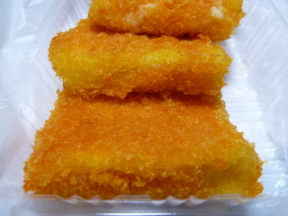
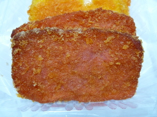

揚げ物茶屋 住京のハンペン。
2012/07/22
江津の道の駅「サンピコごうつ」にある揚げ物やさんで買い物をしました。

試食しらた美味しかったので買っちゃいました。
チーズハンペンがコンガリといい色で揚げられています。
見た目通り、想像通りの味で美味しかったです。
今日はいいお天気でした。
島根県江津市後995-1

浜田名物の赤天ですね。（たぶん）
赤天ってあんまり食べなれていないので、正直味がよく解らいです。
なんとなく辛いイメージがあったんですが、これはそんなに辛くなく、食べやすかったです。
2012/07/22
江津の道の駅「サンピコごうつ」にある揚げ物やさんで買い物をしました。

試食しらた美味しかったので買っちゃいました。
チーズハンペンがコンガリといい色で揚げられています。
見た目通り、想像通りの味で美味しかったです。
今日はいいお天気でした。